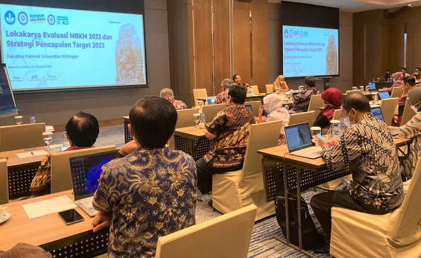

Penulis :
Tim Akademik D3 Teknik Informatika
Waktu Publikasi :
Lokasi :
Laboratorium Komputer 2

Lokakarya membantu mahasiswa memahami struktur HTML, CSS dasar, dan pengujian halaman melalui browser
Latar Belakang:
Kegiatan diselenggarakan untuk memperkuat fondasi sebelum mahasiswa mempelajari framework dan pengembangan aplikasi yang lebih kompleks.
Rangkaian Kegiatan:
Peserta menyusun halaman profil, memperbaiki kesalahan HTML, menerapkan CSS, dan mempresentasikan hasil melalui code defense singkat.
Kesalahan saat praktik menjadi bahan untuk memahami cara kerja browser, bukan sekadar sesuatu yang harus dihindari